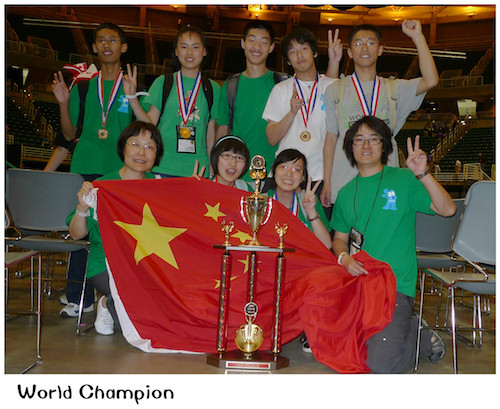
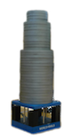
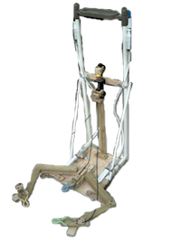
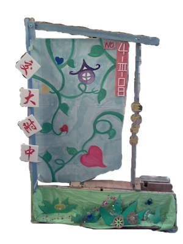

A girl
with innovation
in her life
I'm Yu Shi.
When I was 4 year old, I began to draw pictures. It was the start of my creative life. The first picture I drew in class were ten suns from a Chinese fairy tale. Of course I did not know what those suns were actually like, so I created my own suns, some of which were , some were and some were . I lost that picture but I fell in love with the spirit of innovation and creation.
I: 2000 ~ 2009
I spent 9 years to make copies of famous paintings, especially on Gongbi, which is the most complicated type in Chinese traditional paintings. However, because of complexity, it is extraordinarily realistic. Birds’ feathers and thorns on flowers’ scape could be seen clearly in the paintings.
My power of observations and sense of perseverance were cultivated during those exercises and I began to get involved in much broader parts, like cartoons and doodle. I’m a left-hander. I am used to drawing by my left hand. With the help of my right brain, the emotion center, I always draw pictures to express feelings.
II: 2009 ~ 2010
Because of my perseverance and hand-on skills cultivated by drawing, I was selected to represent my high school to attend Odyssey of the mind competition, a great journey in my life. I feel the power of innovation, such as supporting more than 600kg with an 18g balsa wood column structure, sending complex messages only with 5 different objects and changing waste into beautiful stage properties.
The video shows how various column structures in the world finals worked.

This picture shows the column structure designed by us. They are 4 circular columns weighed 18 grams and those barbells above are more than 600 kg.
We are not only required to test column structure, but also we need to perform an 8-min drama with creative items designed.

The main part of this jellyfish was made from a broken umbrella. Linked with motor, it can move up and down, like a swimming jellyfish.
This device is a lobster which could help set our column structure on the appointed location if we filled injectors with water.
This is a boat made of empty cans.

This is the display board of our team showing our name and team number. A motor on the bottom could make a pinwheel on the top to turn back and forth.

During the world finals, I was deeply impressed by exquisite badges of different teams, such as the folding fans from Korean teams, Ferris Wheels from Florida and computers from California. All these badges creatively describe the uniqueness of their parts.
III: 2010 ~ 2011
With the innovative spirits to make our life better, I intended to build an automatic watering system because my mom was too busy to take care of flowers in my home. During this project, I noticed that innovation should be based on solid knowledge and problem solving skills.
VI: 2011 ~ 2012
Innovation could be a life style. I love the experience to do something interest together with a group of people. We once performed a show during sports meeting opening ceremony. I enjoyed preparing stage properties and discussing funny plots with my classmates. Thanks to my painting skills, I made most of those drawings, such as the buildings and clothes.